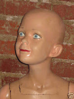

Has this ever been done?
2/20/2009
{kind=link}

Clinton: Have you ever thought about taking a child mannequin and turning it into a Vent figure? The child mannequins are usually 40"-46" tall and made of fiberglass. The eyes and mouth can be cut out and the hands and feet can be cut off and sewed to a cloth Vent body.
Here is one on ebay now: Click here Phil
* * * * *
Phil: I've thought about it on more than one occasion, yes. I have never tried it, however. Might be tempted on this one because the character would be so very unique, but with a $55.00 shipping fee and who knows what final sales price, I would prefer to invest those same dollars (or less) in a kit from Mike Brose. Then again - using a mannequin head such as this one would result in an amazingly lifelike character. (Perhaps too much so.) Clinton
Here is one on ebay now: Click here Phil
* * * * *
Phil: I've thought about it on more than one occasion, yes. I have never tried it, however. Might be tempted on this one because the character would be so very unique, but with a $55.00 shipping fee and who knows what final sales price, I would prefer to invest those same dollars (or less) in a kit from Mike Brose. Then again - using a mannequin head such as this one would result in an amazingly lifelike character. (Perhaps too much so.) Clinton